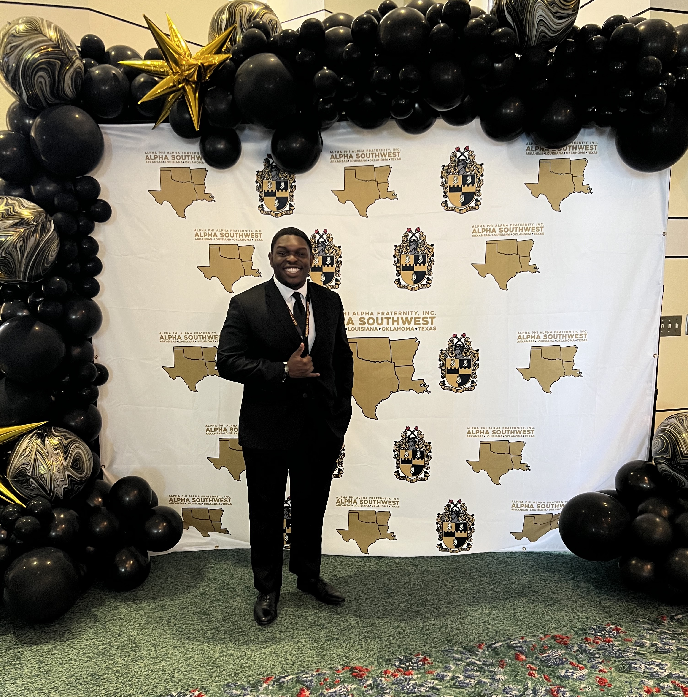

Learn about my hobbies, my lifestyle, and my Day-to-Day.
Above is a picture of me at the Southwest Regional Convention for my fraternity, Alpha Phi Alpha, Fraternity Inc. I had a great time, and I'm looking forward to the next one!
My name is Joseph Udoh and I am an Information Technology Specialist at Moen Inc. I am currently a computer information systems major with a focus in cybersecurity. I posses 5+ years of experience in assisting customers, maintaining client relations, and running the day-to-day operations of business management. I am also an efficient college student (3.41 GPA) with 5+ years of work experience and proven knowledge of customer communications, advanced technology, and data communications, as well as, 4+ Years in Microsoft, iOS, and multiple other operating systems.I am looking to leverage and grow my knowledge in the IT field, with an openness to learning new technologies.
In my free time I enjoy mrunning my own photography and videography business. As a professional wedding & portrait photographer, I am granted the opportunity to explore many different parts of the world while capturing the true beauty of the people, the culture, and the landscapes around me. I enjoy watching the casual Netflix show and playing football with my colleagues. On a rainy day, you can almost always catch me browsing the internet, hanging out, or learning something new!